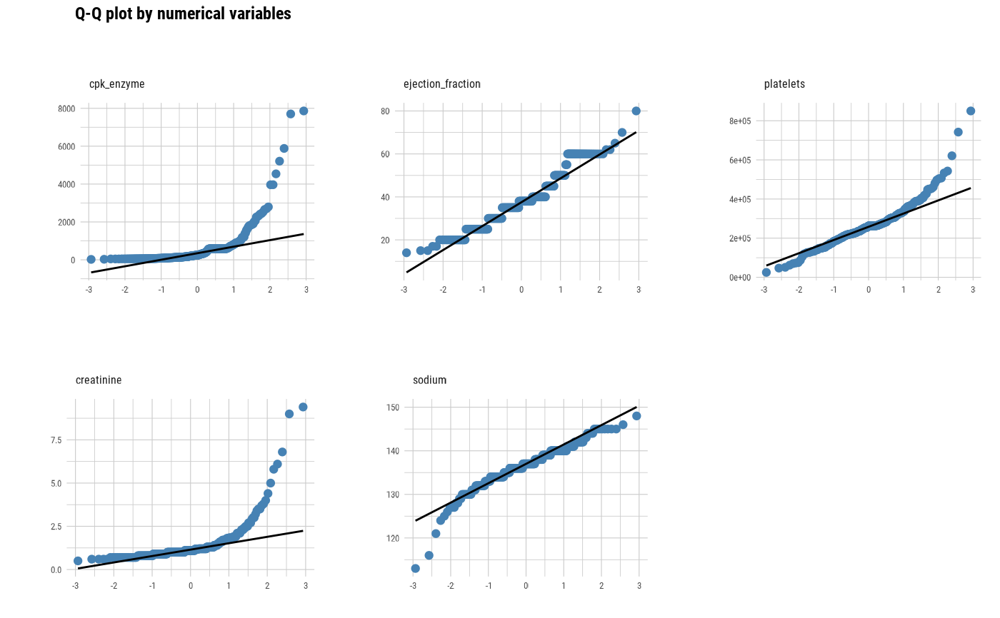
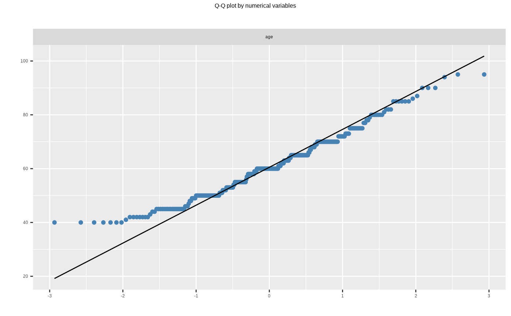
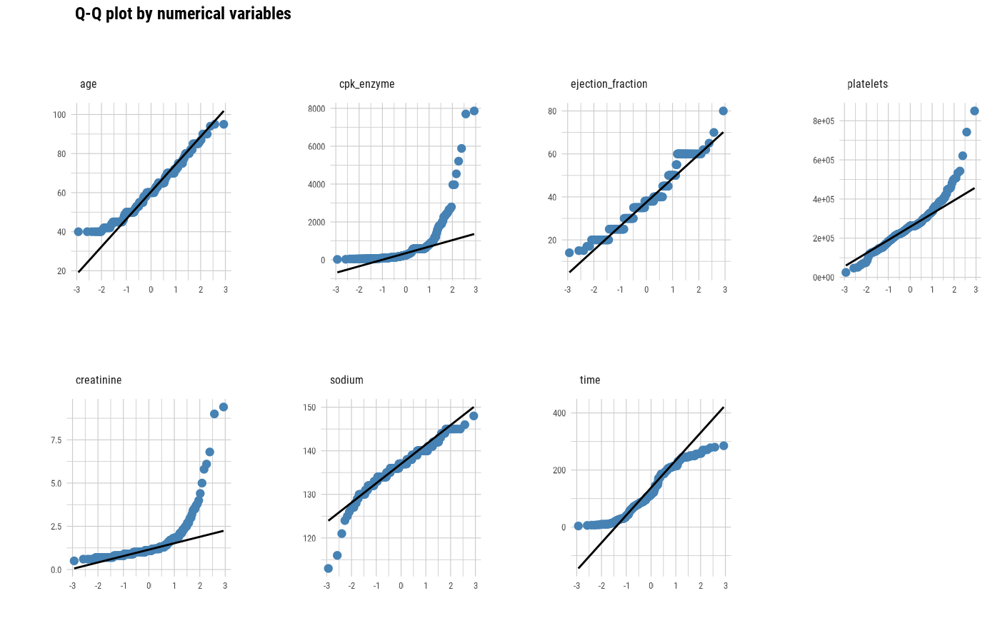
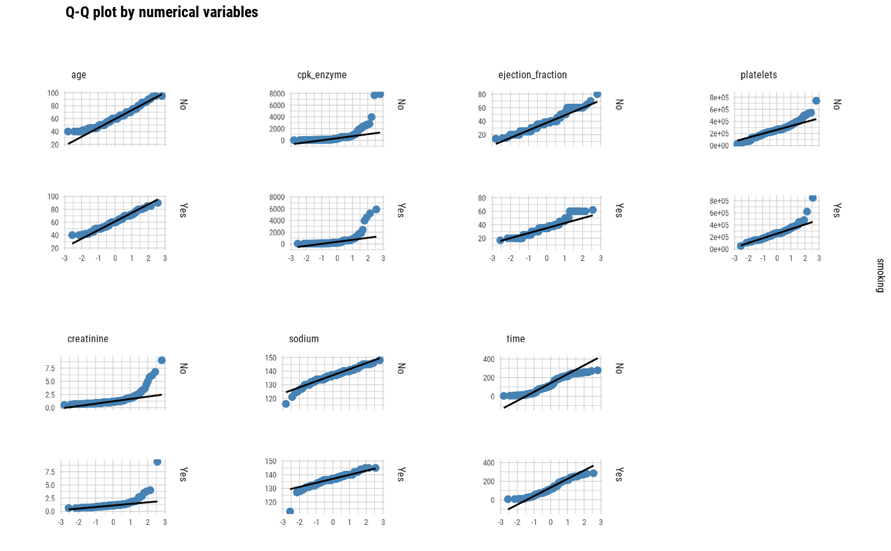
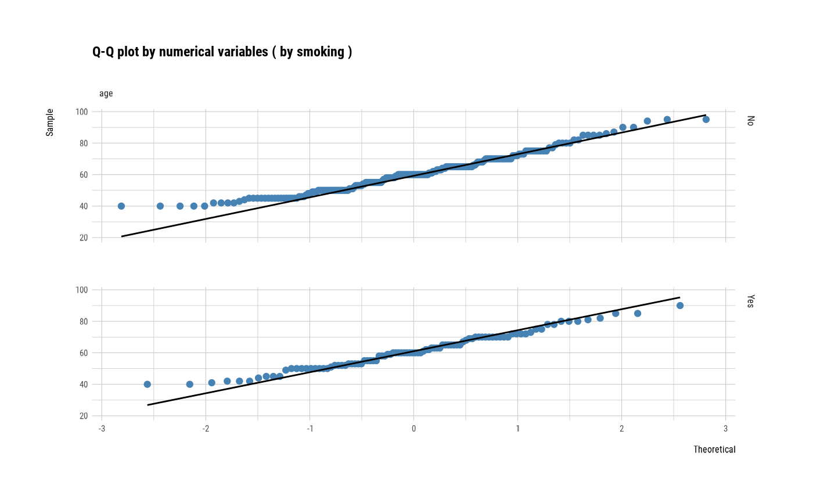
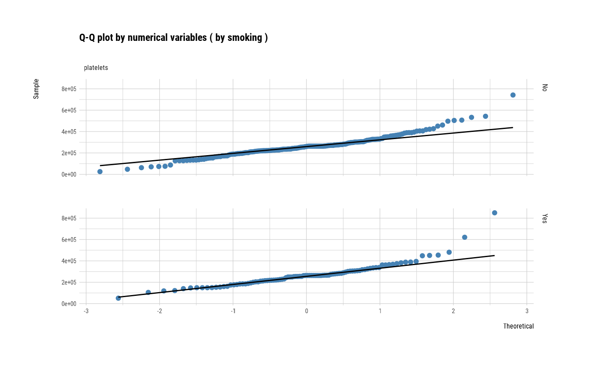

The plot_qq_numeric() to visualizes the Q-Q plot of numeric data or relationship to specific categorical data.
plot_qq_numeric(.data, ...) # S3 method for data.frame plot_qq_numeric( .data, ..., col_point = "black", col_line = "red", title = "Q-Q plot by numerical variables", each = FALSE ) # S3 method for grouped_df plot_qq_numeric( .data, ..., col_point = "black", col_line = "red", title = "Q-Q plot by numerical variables", each = FALSE )
Arguments
| .data | data.frame or a |
|---|---|
| ... | one or more unquoted expressions separated by commas. You can treat variable names like they are positions. Positive values select variables; negative values to drop variables. If the first expression is negative, plot_qq_numeric() will automatically start with all variables. These arguments are automatically quoted and evaluated in a context where column names represent column positions. They support unquoting and splicing. |
| col_point | character. a color of points in Q-Q plot. |
| col_line | character. a color of line in Q-Q plot. |
| title | character. a main title for the plot. |
| each | logical. Specifies whether to draw multiple plots on one screen. The default is FALSE, which draws multiple plots on one screen. |
Details
The The Q-Q plot helps determine whether the distribution of a numeric variable is normally distributed. plot_qq_numeric() shows Q-Q plots of several numeric variables on one screen. This function can also display a Q-Q plot for each level of a specific categorical variable.
Examples
# Generate data for the example carseats <- ISLR::Carseats carseats[sample(seq(NROW(carseats)), 20), "Income"] <- NA carseats[sample(seq(NROW(carseats)), 5), "Urban"] <- NA # Visualization of all numerical variables plot_qq_numeric(carseats)#> Warning: Removed 20 rows containing non-finite values (stat_qq).#> Warning: Removed 20 rows containing non-finite values (stat_qq_line).# Select the variable to diagnose plot_qq_numeric(carseats, "Sales", "Income")#> Warning: Removed 20 rows containing non-finite values (stat_qq).#> Warning: Removed 20 rows containing non-finite values (stat_qq_line).plot_qq_numeric(carseats, -Sales, -Income)# Using pipes --------------------------------- library(dplyr) # Plot of all numerical variables carseats %>% plot_qq_numeric()#> Warning: Removed 20 rows containing non-finite values (stat_qq).#> Warning: Removed 20 rows containing non-finite values (stat_qq_line).# Using groupd_df ------------------------------ carseats %>% group_by(ShelveLoc) %>% plot_qq_numeric()#> Warning: Removed 20 rows containing non-finite values (stat_qq).#> Warning: Removed 20 rows containing non-finite values (stat_qq_line).#> Warning: Removed 20 rows containing non-finite values (stat_qq).#> Warning: Removed 20 rows containing non-finite values (stat_qq_line).